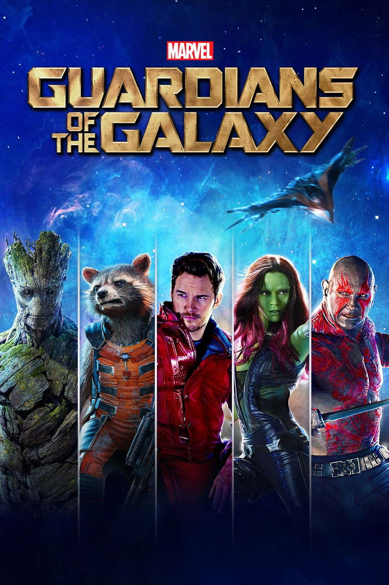

Guardiões da Galáxia
Diretor: James Gunn
Com: Chris Pratt, Zoe Saldana, Dave Batista, Vin Diesel, Bradley Cooper
Censura:10 anos
Tempo de duração: 122 min
Sinopse: Peter Quill (Chris Pratt) foi abduzido da Terra quando ainda era criança. Adulto, fez carreira como saqueador e ganhou o nome de Senhor das Estrelas. Quando rouba uma esfera, na qual o poderoso vilão Ronan, da raça kree, está interessado, passa a ser procurado por vários caçadores de recompensas. Para escapar do perigo, Quill une forças com quatro personagens fora do sistema: Groot, uma árvore humanóide (Vin Diesel), a sombria e perigosa Gamora (Zoe Saldana), o guaxinim rápido no gatilho Rocket Racoon (Bradley Cooper) e o vingativo Drax, o Destruidor (Dave Bautista). Mas o Senhor das Estrelas descobre que a esfera roubada possui um poder capaz de mudar os rumos do universo, e logo o grupo deverá proteger o objeto para salvar o futuro da galáxia.